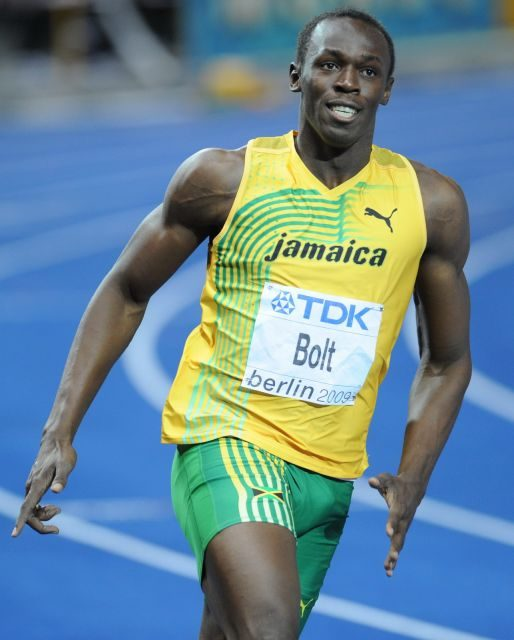

Athlete story

Eh Phouthong: The Koh Kong Fighter Who Became the Face of Kun Khmer
A national champion across several weight classes, he beat international opponents in Phnom Penh, taught street children for free and now coaches Cambodia's next champions.

Ma Long: From Anshan Prodigy to Six Olympic Gold Medals
He was left out of China's singles team for London 2012, then won back-to-back Olympic singles titles and three straight world championships.

Maria Sharapova: From a Cold Start to Tennis Immortality
Tracing the remarkable journey of the Russian icon who conquered Wimbledon as a teenager, claimed the career Grand Slam, and left a lasting imprint on the sport.

Sorn Seavmey and the kicks that put Cambodian taekwondo on the map
From a quiet childhood in Phnom Penh to historic gold at the Incheon Asian Games, the pioneering taekwondo champion changed the landscape of sport in her homeland.

The Rebel Who Remade Asian Tennis: The Defining Journey of Li Na
From personal grief in Wuhan to Grand Slam triumphs in Paris and Melbourne, China's pioneering champion carved her own path to history.

From the Red Hills of Sherwood Content to the Pinnacle of World Athletics: The Life of Usain Bolt
Tracing the journey of the Jamaican sprinter who redefined human speed, overcame early physical hurdles, and left an indelible mark on global sport.

The Great Wall with a Heart: The Life and Burden of Yao Ming
From the streets of Shanghai to the rafters of Houston, Yao Ming was more than a basketball player—he was a bridge for an entire continent.